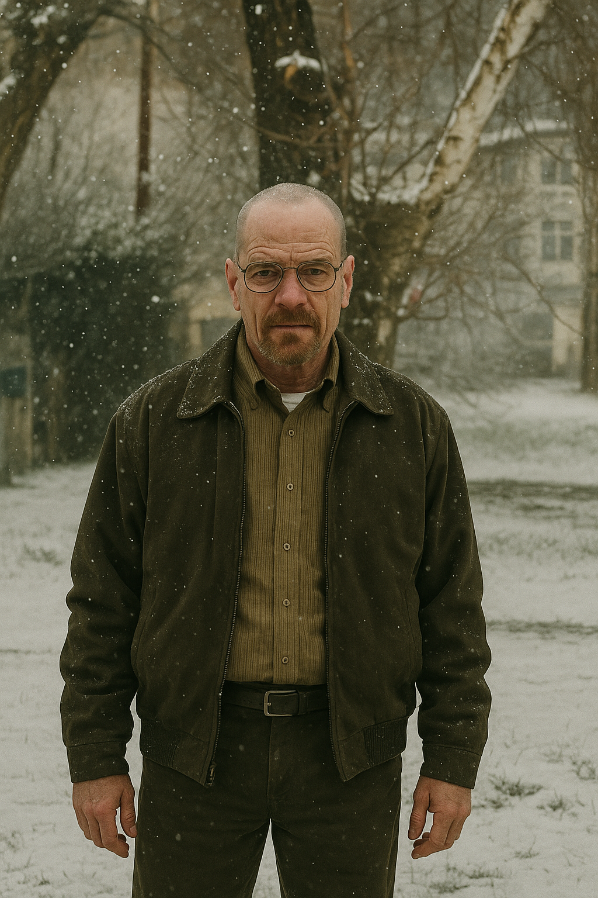

Home
Bienvenido a la fan page de Breaking Bad creada por Guido. Aquí encontrarás información de los personajes, capítulos y curiosidades de la serie.
Capítulos
Aquí podrás explorar la lista de episodios y temporadas de Breaking Bad (contenido en desarrollo).
Personajes
Guido
Nombre completo: Guido Gassa
País de origen: Buenos Aires, Argentina
Edad: 28 años (año 2008, inicio de la historia)
Descripción: Encargado de logística y distribución en zonas alejadas del centro operativo.
Guido llegó a Estados Unidos con una fachada clara: un pequeño negocio de importación y exportación de productos latinos en Queens. Esa fachada le permitió tener contactos con puertos y transportistas, conocer a pequeños distribuidores latinos y ganar la confianza de la comunidad. En Nueva York, aplicó métodos de contrabando aprendidos en rutas rurales argentinas, combinándolos con tecnología para rastrear camiones y sobornos estratégicos.
Prefiere evitar enfrentamientos, optando por rutas alternativas y acuerdos con bandas locales. Aunque opera en las sombras, su reputación crece como el hombre capaz de mover cualquier cosa sin dejar rastro. La DEA comienza a sospechar de su negocio cuando los números de importación no coinciden con las ventas reales.
Walter White
Nombre completo: Walter White
País de origen: Albuquerque, Nuevo México, EE. UU
Edad: 50 años (año 2008, inicio de la historia)
Descripción: Profesor de química de secundaria que, tras ser diagnosticado con cáncer de pulmón, se convierte en fabricante y líder de la producción de metanfetaminas. Es experto, extremadamente meticuloso, calculador y obsesivo con la calidad de su producto. Inteligente, perfeccionista, orgulloso y cada vez más frío a medida que se adentra en el mundo criminal.
Jesse Pinkman

Nombre completo: Jesse Bruce Pinkman
País de origen: Albuquerque, Nuevo México, EE. UU
Edad: 25 años (año 2008, inicio de la historia)
Descripción: Exalumno problemático de Walter White, que se convierte en su socio en la producción y distribución de metanfetaminas. Conocido por su estilo impulsivo y poco meticuloso, pero con gran habilidad para moverse en el mundo callejero. Su experiencia en la venta de drogas en el mercado local y su carisma lo hacen un enlace útil con los distribuidores. Aunque su personalidad es rebelde y emocional, desarrolla un vínculo complejo con Walter, alternando entre lealtad y conflicto.